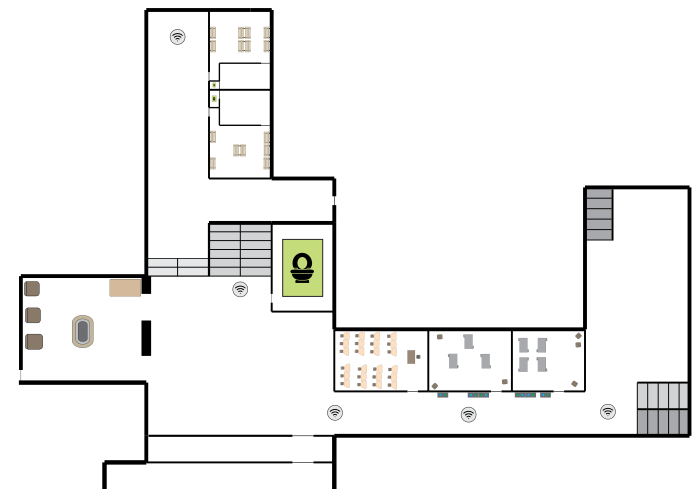

Földszint
Infó Tanári
Első Emelet
Második Emelet
GUEST_vendeg | e8:26:89:08:af:21 | 2412MHz (20MHz) | [WPA2-EAP/SHA1-CCMP] [Aruba] | -58dBm
eduroam | e8:26:89:08:af:20 6m | 2412MHz (20MHz) CH 1 | [WPA2-EAP/SHA1-CCMP] [Aruba] | -59dBm
T-phone | 32:37:16:07:af:27 62m | 2437MHz (20MHz) CH 6 | [WPA2-PSK-CCMP] | -84dBm
loT004291 | cc:d0:83:81:d5:22 | 2442MHz (20MHz) CH 7 | [WPA2-PSK+FT/PSK-CCMP] [Aruba] | -74dBm
Redmi Note 9 Pro | c6:ed:98:30:a0:3b 243m | 2462MHz (20MHz) CH 11 | [WPA2-PSK-CCMP] | -83dBm
GUEST_vendeg | e8:26:89:08:af:21 | 2412MHz (20MHz) | [WPA2-EAP/SHA1-CCMP] [Aruba] | -58dBm
eduroam | e8:26:89:08:af:20 6m | 2412MHz (20MHz) CH 1 | [WPA2-EAP/SHA1-CCMP] [Aruba] | -59dBm
T-phone | 32:37:16:07:af:27 62m | 2437MHz (20MHz) CH 6 | [WPA2-PSK-CCMP] | -84dBm
loT004291 | cc:d0:83:81:d5:22 | 2442MHz (20MHz) CH 7 | [WPA2-PSK+FT/PSK-CCMP] [Aruba] | -74dBm
Redmi Note 9 Pro | c6:ed:98:30:a0:3b 243m | 2462MHz (20MHz) CH 11 | [WPA2-PSK-CCMP] | -83dBm
